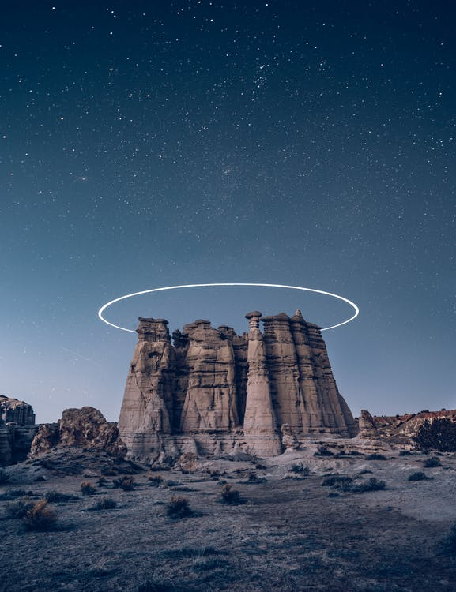
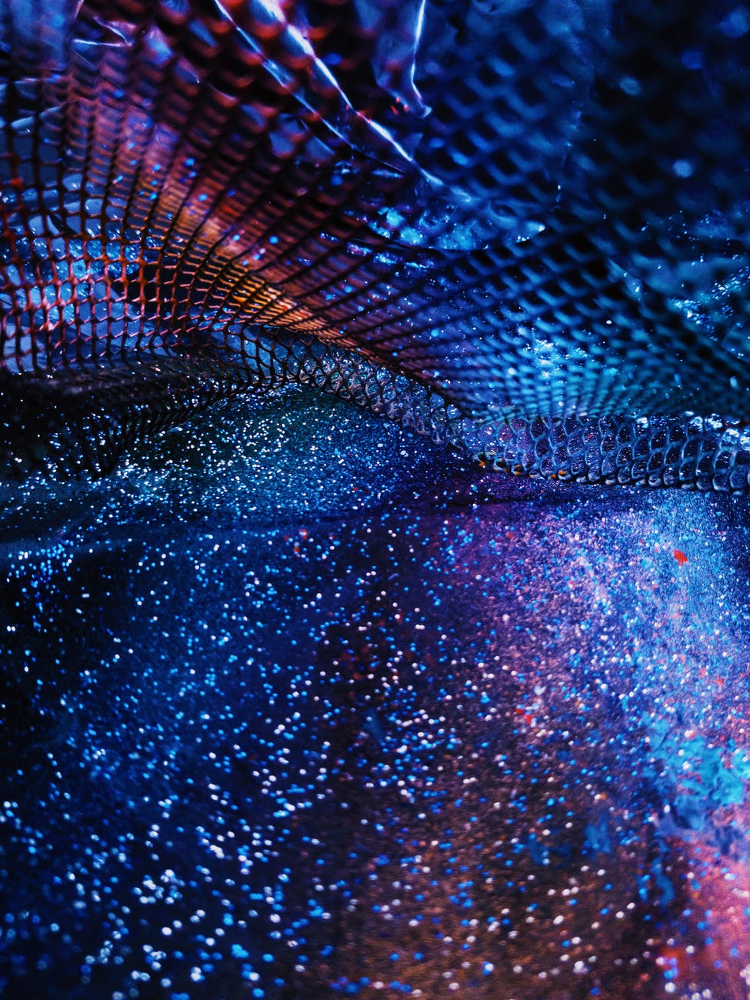
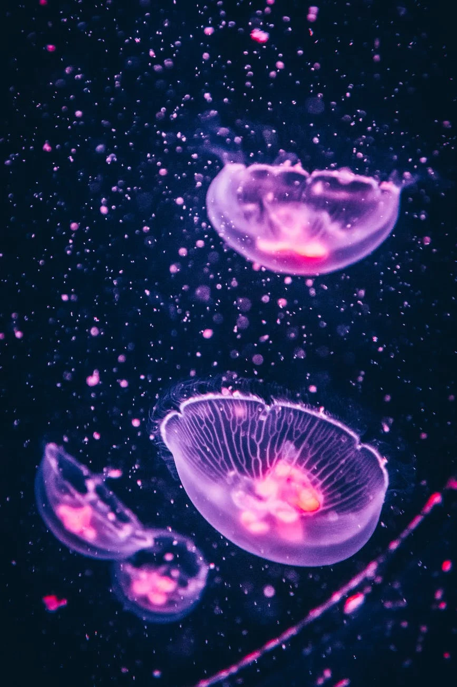

This website has some subtext that goes here, it is very charismatic and aesthetic, but has something of a rambling problem. We still love it though.

Some extravagant header.
Some text that dramatically explains the cryptic image above. It doesn't always succeed.
Some text that dramatically explains the cryptic image above. It doesn't always succeed.
Some text that dramatically explains the cryptic image above. It doesn't always succeed.
Some text that dramatically explains the cryptic image above. It doesn't always succeed.
As I seek for glory I stumble upon myself and wonder, what is Divine if not the search. What is life if not the tension between two final moments, the eternal ephemerality that shines at us from the shadows of this junction.